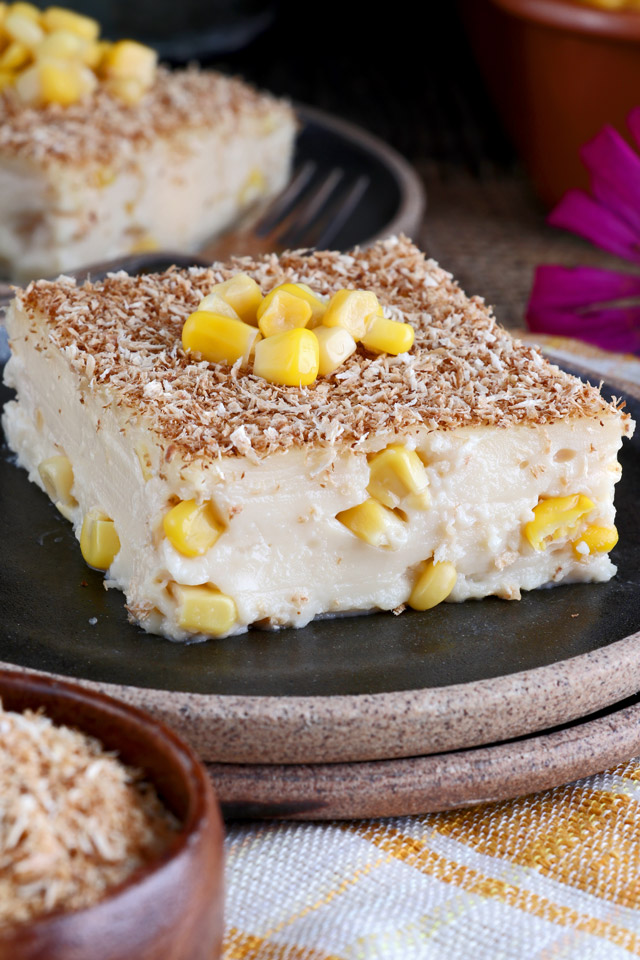

Maja Blanca

Maja Blanca also known as pudding or coconut pudding Commondly served at Fiestas, holidays, and special occasions. It is a Filipino
dessert wih a gelatin-like consistency made primarily from coconut milk
Nutrition:
CALORIES: 221KCAL
CARBOHYDRATES: 31G
PROTEIN: 5G
FAT: 8G
SATURATED FAT: 5G
CHOLESTEROL: 21MG
SODIUM: 97MG
POTASSIUM: 264MG
FIBER: 0G
SUGAR: 21G
VITAMIN A: 175IU
VITAMIN C: 1.7MG
CALCIUM: 188MG
IRON: 0.4MG
Ingredients:
- 1 can (13.5 fl oz) coconut milk
- 1 ½ cup evaporated milk or fresh milk
- 1 cup sweetened condensed milk
- ¾ cup cornstarch - dissolved in ¾ cup milk
- ½ cup corn kernel - drained
- ½ cup desiccated coconut
- butter or margarine - for greasing pan
Steps:
- Grease a (21x21cm) square pan with butter or margarine. Set aside.
- Combine coconut milk, milk and condensed milk in a pot and bring to boil over medium heat while stirring occasionally.
- Add the corn kernel. Pour in the cornstarch mixture and stir constantly and quickly until the texture turns into a paste-like consistency. Remove from heat and transfer to greased pan immediately. Gently tap the pan on the kitchen counter a couple of times to get rid of trapped bubbles and even out the surface with spatula or spoon. Let the Maja Blanca settle and cool down.
- Toast the coconut flakes in a pan over low fire until browned. Stir constantly to avoid burning them. Set aside.
- Sprinkle top with toasted coconut flakes.